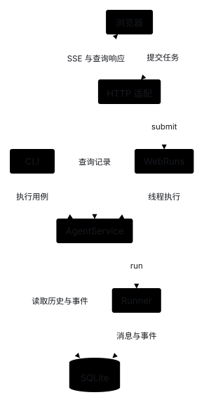
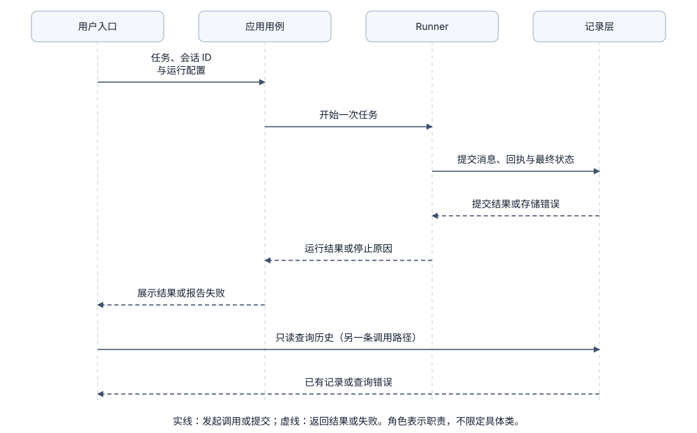
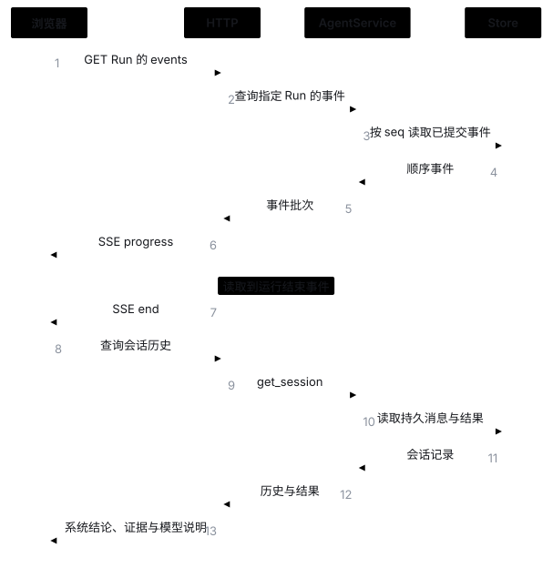
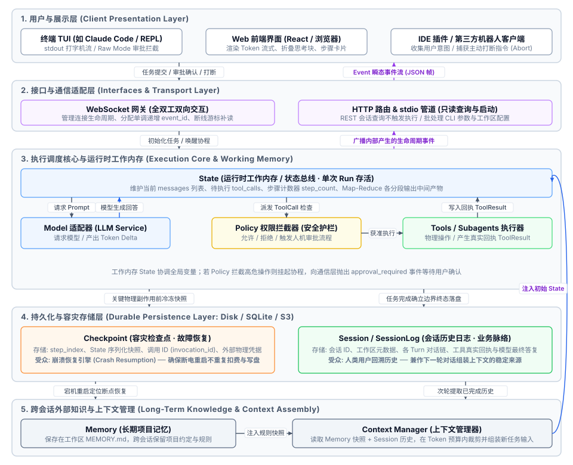

Interfaces：用户交互入口与实时通信协议
1. 问题起点：为什么 Agent 入口不能当成普通 Web API？
传统的 Web 接口是“请求-响应”模式：客户端发送 HTTP POST，几百毫秒内服务器返回 JSON，连接随即关闭。如果直接用这种模式套用在 Agent 系统上，会遇到三个无法解决的体验与工程瓶颈：
- 瓶颈 1：长时间运行如同黑盒：Agent 往往需要数秒乃至数分钟来连续规划、请求模型与执行多次工具。如果用户只能干等单次 HTTP 请求结束，期间没有任何反馈，极易误以为页面卡死而频繁刷新或重发，导致后端重复创建开销巨大的任务。
- 瓶颈 2：中途无法等待人工决策（Human-in-the-loop）：当 Agent 遇到高危工具调用（如删除生产表、发送外部邮件）或参数歧义时，必须停下来向用户询问确认。传统的单向 HTTP 请求无法中途反向向客户端索要输入并挂起等待。
- 瓶颈 3：无法实时紧急打断（User Abort）：当用户在界面上发现模型生成方向跑偏、陷入死循环或正在尝试无意义的工具搜索时，必须能立即点击“停止”。如果缺少双向实时控制通道，前端哪怕关闭了页面，后端仍在盲目消耗 Token 与工具配额。
期望达到的效果：
- 核心逻辑与入口解耦：无论用户通过终端 CLI、Web 网页、IDE 插件还是第三方机器人提交任务，底层复用同一套 Runner、权限规则与工具集，入口层只负责参数解析与事件转换。
- 执行状态全程可见：模型思考、Token 逐字输出、工具调用起止与执行结果以结构化事件实时推送，用户随时看清当前进展。
- 支持全双工人机协作：高危操作审批、中途追问与主动打断能无缝嵌入运行中的 Agent Loop，无需粗暴销毁整个会话。
- 断线可恢复且不重跑：客户端因网络抖动、页面刷新或断网重连后，能依据事件游标补齐遗漏进度，不触发重复运行。
下图展示了 CLI、Web 与后端应用服务的解耦结构（当前代码已实现 CLI，HTTP 与 WebSocket 为后续扩展方向）：

2. 核心架构：展示层、通信层、调度层与执行核心
为了让不同入口共用同一套底层 Agent 逻辑，系统必须严格分为四层：
- 展示层（Presentation Layer）：CLI 终端界面、Web 前端界面或 IDE 插件。只负责收集用户键盘/鼠标输入并渲染后端推送过来的结构化事件，严禁在展示层编写模型调用或工具权限判断逻辑。
- 通信层（Transport & Adapters）：CLI 参数解析器、HTTP 路由处理器、WebSocket 协议网关。负责连接生命周期管理、鉴权、心跳保活、协议编解码（如 JSON-RPC 或自定义 Event Schema）。
- 调度与应用层（AgentService / Task Manager）：接收规范化的业务参数（任务文本、会话 ID、用户确认结果），负责定位历史记录、解析工作区与 Policy 权限配置，并管理后台协程或 Worker 任务生命周期。
- 执行核心（Runner Loop）：纯粹的 Agent Loop 调度中枢。接收
run_task请求，推进模型调用、工具分发与状态持久化；对外仅通过事件通道广播生命周期事件，接收打断或用户回复信号。
在多入口架构中，“提交运行”与“只读查询”必须从物理路径上彻底分开：
- 提交运行路径：入口收集用户问题 → 应用服务配置环境与 Policy → 启动 Runner 循环 → State 实时持久化记录 → 通信层向客户端推送进度事件。
- 只读查询路径：入口发起会话列表或历史详情查看 → 直接读取持久化存储（如 JSONL 或数据库）并返回原样数据 → 绝对不触发模型调用，也绝对不执行任何工具。
- 错误分层返回：展示层必须如实区分“请求参数非法（400 校验错误）”、“工具执行失败（受控回执已交回模型）”与“系统崩溃（500 异常）”，绝不将空结果或失败伪装成执行成功。

初始化与运行期分离原则：组件依赖（模型 Key、工作区路径、Policy 规则）在服务启动或任务创建时固定注入；运行期交互只传递纯业务载荷（任务描述、会话 ID、事件增量与审批结果），前端的按钮状态不能作为后端工具权限的决定源。
3. 通信与任务调度方案对比
根据任务耗时、并发要求与部署形态，执行服务有 4 种常见方案（本项目当前采用方案 A，B/C/D 为可选扩展）：
A. 单次批处理执行（One-shot CLI 与自动化脚本）
- 工作方式：单次命令调用即退出（Run-to-completion）。入口函数一直阻塞等待，直到 Runner 循环彻底结束并打印最终结果。
- 适用场景：CI/CD 自动化流水线、定时批处理脚本或单次运行的简单命令行工具（如本项目阶段 0–5 的 CLI）。
- 主要代价：执行期间不监听外部输入，无法在中途进行人机协同审批；若封装为传统同步 HTTP 接口，极易触发网关超时。
B. 进程内后台任务（本地 Web MVP）
- 工作方式：客户端提交任务后，服务端立即返回任务 ID，并在当前 Web 进程内部启动异步任务（如 Python
asyncio.create_task）执行 Runner，客户端通过独立通道观察进度。 - 适用场景：个人本地运行的 Web UI（如基于 FastAPI / Starlette），架构极轻，开发验证成本低。
- 主要代价：Web 服务重启或异常崩溃时，正在运行的后台任务直接丢失；多实例部署时状态不互通。
C. 持久任务队列与独立 Worker（生产长任务系统与 Temporal 编排）
- 工作方式：任务提交后先写入持久化存储或分布式工作流引擎（如 Redis/Celery、RabbitMQ 或 Temporal 状态机），独立 Worker 进程通过长轮询（Long Polling）领取任务并执行 Runner，前端按任务 ID 查询或订阅完成事件。
- 适用场景：企业级多用户平台、耗时数十分钟的深度报告/多素材总结 Agent、需要水平弹性扩容与故障自动接盘的生产系统。
- 工程代表与落地方态：
- 原生 Worker 模式（如 Temporal Activity Worker）：Agent 服务不暴露 Web API，常驻进程直接订阅 Task Queue，崩溃时由调度中心自动超时重试并切换节点接盘。
- 外部解耦模式（如 HTTP 202 + Signal 回传）：上游持久化引擎（如 Temporal）发起 HTTP 触发，Agent 服务立即返回 202 并放入后台执行，执行完成后通过 Signal/Webhook 异步回填结果，配合 K8s 优雅关停保障在途任务。
- 主要代价：系统引入分布式协调依赖；需处理任务租约心跳（Heartbeat）、幂等去重、分布式打断取消与外部副作用对齐（详见 State 与 Recovery）。
D. 外部托管 Agent 运行时（云端全托管服务）
- 工作方式：开发者完全不自建 Runner 调度器与会话数据库，直接调用云端托管的 Agent 平台（如 Dify API、Coze 扣子、OpenAI Assistants API 或 LangGraph Cloud）。云端平台全权负责维护会话历史、上下文裁剪、工具循环推进与代码沙箱，前端只负责收发标准事件流。
- 适用场景：初创团队验证 MVP、无需复杂私有化权限控制、仅专注前端业务界面定制的轻量产品。
- 主要代价：
- 双重状态分叉（Split-Brain）：云端平台存有一份完整会话记录，你自己的业务数据库往往也想存一份。一旦网络异常，本地与云端数据极易不一致。
- 黑盒不可控与厂商锁定：无法自由定制上下文裁剪算法、无法在工具执行前做细粒度 Policy 本地拦截，且模型调用与调度成本昂贵。
4. 传输协议选择：HTTP 轮询、SSE 还是 WebSocket？
客户端如何实时获取 Agent 的执行进度？业界有三种主流传输协议：
| 通信协议 | 通信通道特征 | 适合场景 | 局限与核心代价 |
|---|---|---|---|
| HTTP 定时轮询 | 单向拉取：客户端每隔 1–2 秒发送 GET 请求获取增量事件 | 极简只读前端、网络环境极受限（禁止长连接）的企业内网 | 存在固定轮询延迟，高频空查消耗服务器性能，无法做到打字机级流式效果 |
| POST + SSE + GET | 半双工：POST 提交任务，SSE（Server-Sent Events）单向推流，GET 查历史 | 纯文本对话、只读进度展示（如个人聊天助手、标准文档问答） | 仅支持服务端向客户端推流；客户端若要打断或回复确认，必须另起新 HTTP POST，连接逻辑分散 |
| WebSocket 全双工 | 全双工：一条持久长连接，双向均可随时收发高频结构化帧 | 复杂 Agent IDE、人机协作审批（HITL）、实时交互提问与低延迟主动打断 | 需要设计完整的心跳保活、断线重连状态机与帧协议路由 |
为什么涉及人机协同（HITL）时，推荐使用 WebSocket？
在真实的自主代码或运维 Agent 中，Agent 并不是只进不出地“吐字”，而是高频伴随双向沟通：
- 实时双向对话能力：WebSocket 在同一个已认证的持久 TCP 连接上，既能由服务端以毫秒级延迟向客户端下发模型 Token 和步骤事件，又能随时由客户端向上游投递控制帧。
- 连接状态与任务绑定：当 WebSocket 物理断开时，服务端能够第一时间触发连接关闭事件，进而根据策略决定是暂停任务等待重连，还是继续在后台静默运行。
- 连接与信令开销低：无需在每次用户点击审批确认时重新建立 TCP 握手、TLS 协商与 HTTP Header 鉴权解析。
架构分工清晰化原则：在实际工程落地时，推荐采取 “RESTful API 负责静态资源与历史查询 + WebSocket 负责运行中实时双向交互” 的混合架构，兼具两者的优势。

图示辨析：为什么上图没有出现 WebSocket？
上图展示的是典型的 “半双工 / 单向流式” 架构（即前述表格中的方案 2）：
- 浏览器通过 HTTP POST 提交任务，建立独立的长连接接收
SSE progress单向推流，最后通过 HTTP GET 查历史。 - 此方案的局限：只能“服务端单向通知浏览器”。如果中途需要人工审批高危操作、补充参数或用户主动按“停止”，浏览器不能在 SSE 连接上反向发送数据，必须另外再发起新的 HTTP POST 请求，前后端连接与状态逻辑是割裂的。
若切换为 WebSocket 全双工（方案 3），全链路时序将发生本质升级：
- 单通道常驻会话：浏览器与服务端仅需一次握手建立 WebSocket，任务提交、实时 Token 流、步骤事件全部在同一个持久 TCP 连接上传输。
- 零摩擦双向打断与审批：服务端下发
approval_required时，浏览器无需重开 HTTP 请求，直接在当前 WebSocket 上即时发送审批结果（approval_response）或取消指令（abort_run），实现真正的双向人机协同（详见下节）。
5. 深入全双工通信：人机协同与实时控制流程
通过 WebSocket，系统可以优雅支持以下三种核心人机协作场景：
场景一：高危工具的人机审批（Human-in-the-loop Approval）
当 Policy 判定某工具操作超出免密授权范围（如删除文件、修改生产环境配置）时，Runner 暂停执行并等待用户裁决：
- Runner：检测到工具
delete_file需要人工确认，生成审批请求approval_requested并挂起协程。 - 服务端（WebSocket）：向客户端推送帧：
{"type": "approval_required", "action_id": "act_981", "tool": "delete_file", "params": {"path": "main.py"}}。 - 客户端（前端）：弹出确认对话框，展示具体操作与危险提示，阻止用户继续无意义输入。
- 用户：点击“拒绝，禁止删除”。
- 客户端（WebSocket）：向上游发送确认帧：
{"type": "approval_response", "action_id": "act_981", "approved": false, "reason": "保留原文件，改为新建副本"}。 - Runner：唤醒挂起协程，生成受拒回执
ToolResult(error="用户拒绝操作：保留原文件，改为新建副本")，交回模型引导下一步。
场景二：运行中向用户求助或澄清（Ask User / Clarification）
当任务目标存在歧义或缺少必要输入时，模型主动调用内置交互工具向用户提问：
- 模型：发出工具调用
ask_user(prompt="请问测试环境数据库密码是多少？")。 - 服务端（WebSocket）：推送事件
{"type": "user_input_requested", "prompt": "请问测试环境数据库密码是多少？"}。 - 用户：在前端输入框输入内容并回车发送。
- 客户端（WebSocket）：发送
{"type": "user_input_response", "answer": "secret_123"}。 - Runner：将用户回答作为工具执行结果反馈给模型，继续自动化流程。
场景三：用户主动打断与紧急停止（User Abort / Interrupt）
当用户发现模型思路出现偏差时，点击界面“停止”按钮：
- 客户端（WebSocket）：发送打断控制帧：
{"type": "abort_run", "run_id": "run_001"}。 - 服务端：触发该任务对应的
asyncio.Event取消信号，并通知当前等待的网络请求或工具线程抛出CancelledError。 - Runner：安全收尾当前未完成步骤，在会话中标记该 Turn 状态为
interrupted，释放工作区资源。 - 服务端（WebSocket）：回传事件
{"type": "run_interrupted", "run_id": "run_001"}，前端恢复可输入状态。
【认知破局】Claude Code 也是 CLI，为什么它具备强大的人机交互？
很多开发者会产生直觉困惑：“既然终端命令往往是单次阻塞执行的脚本，为什么 Claude Code、Cursor Terminal 或 Aider 也是跑在终端里，却能做到打字机流式输出、实时高危命令审批（[Y/n]）甚至按 Ctrl+C 随时打断？”
这是因为 CLI 存在两种截然不同的形态：
- 形态 1：单次批处理命令（One-shot CLI / 传统脚本）：
- 运行特征：单次运行即退出（如本项目阶段 0–5 的
python -m learn_agent --task "..."）。主线程同步阻塞直到任务全部结束，中途不监听终端事件，适合自动化流水线。
- 运行特征：单次运行即退出（如本项目阶段 0–5 的
- 形态 2：全交互式终端应用（Interactive TUI / REPL，如 Claude Code、pi）：
- 运行特征：进程常驻运行，由终端事件循环驱动。它在操作系统终端标准输入输出层（stdio）实现了与 WebSocket 全双工完全等价的三大能力：
- 标准输出流式推流（stdout streaming）：不等待模型全部返回，而是监听模型的 delta chunk，通过向
stdout写入 ANSI 转义序列（Escape Codes），实现实时的打字机动画、光标重绘与折叠式思考进度条。 - 终端原始模式人机审批（Raw Mode & stdin）：当 Policy 判定工具高危时，Runner 挂起协程，终端进入原始模式（Raw Mode）直接监听方向键、回车或
y/n按键。用户交互确认后，立即恢复终端并唤醒 Runner 推进。 - 操作系统信号打断（POSIX Signals）：捕获操作系统的
SIGINT（Ctrl+C）信号，向底层的 LLM 网络请求触发AbortController，安全终止当前调用并释放资源。
- 标准输出流式推流（stdout streaming）：不等待模型全部返回，而是监听模型的 delta chunk，通过向
- 运行特征：进程常驻运行，由终端事件循环驱动。它在操作系统终端标准输入输出层（stdio）实现了与 WebSocket 全双工完全等价的三大能力：
架构启示：优秀的 Agent 架构中，UI 形式（无论是 Web 浏览器还是终端 TUI）只是展示层外壳；其底层都依赖于“事件驱动流式推流 + 异步挂起/唤醒状态机 + 真实打断信令”这套完全通用的交互协议。成熟的 Agent（如 pi）内部甚至将 TUI 作为前端客户端，与 Headless Core 通过 stdio 交换 JSON-RPC 消息，两端架构高度一致。
6. 全景数据流架构与事件协议设计
6.1 核心概念辨析：Event、Session、State 与 Checkpoint 的四个不同维度
在设计系统数据模型时，千万不能把前端收到的“步骤事件（Event）”和系统的底层状态混为一谈。这四个概念分别处于完全不同的系统维度，服务于截然不同的受众：
| 概念名称 | 所属维度与本质 | 主要受众 | 存储位置与生命周期 | 核心回答的问题 |
|---|---|---|---|---|
| Event（事件流） | 通信与观测维度 运行时不可变的瞬态广播脉冲 |
展示层（Web / TUI） 链路追踪（如 Langfuse） |
内存环形缓冲区或临时流，任务结束后即可丢弃 | “刚才这 10 毫秒内，系统发生了什么动静？” |
| Session（会话记录） | 人机交互维度 逻辑对话与业务 Turn 脉络 |
人类用户（回溯历史） 模型（次轮组装历史上下文） |
持久化存储（JSONL / 数据库），长期留存 | “我和模型之前聊了什么、达成过什么结论？” |
| State（运行时状态） | 执行中枢维度 任务内部共享的“黑板与变量” |
Runner 调度器 各工具节点与子 Agent |
进程内存变量对象，仅在单次 Run 期间存活 | “当前拿到了哪些中间数据？下一步依赖什么参数？” |
| Checkpoint（检查点） | 容灾恢复维度 关键执行节点的物理冷冻快照 |
崩溃恢复状态机 人工介入核对器 |
持久化磁盘/存储，在关键副作用前落盘 | “若机器此刻断电重启，从哪一步恢复才不重复扣费或重写文件？” |
6.2 全景系统数据流图：数据如何在各层协同流转？
为了让不同层级的数据职责清晰、互不污染，工业级 Agent 系统的全景数据流动遵循以下五层流转体系：

全景数据流动的五大阶段剖析：
- 阶段 1：启动加载与上下文初始化（Memory + Session → Context → State）：
- 当用户发起新一轮提问时，Context Manager 从持久化存储读取该会话已完成的历史记录（Session），并结合工作区锁定的一致性项目记忆（Memory 快照）。
- 在严格的 Token 输入预算内，完成历史裁剪与系统指令组装，注入为当前执行中枢的初始工作状态（State）。
- 阶段 2：执行中枢推进与事件瞬态广播（State ↔ Model ↔ Policy ↔ Event）：
- Runner 驱动模型生成。模型吐出的 Token 增量通过通信层立即包装为
model_delta事件推向展示层，实现打字机效果，不改变系统持久状态。 - 当模型提出工具调用时，调用信息写入内存 State，同时向客户端广播
tool_call_started步骤事件。
- Runner 驱动模型生成。模型吐出的 Token 增量通过通信层立即包装为
- 阶段 3：高危动作前的容灾冷冻（State → Checkpoint 刷盘）：
- 在执行可能产生物理外部副作用的动作（如文件改写、外部 API 扣费）之前，系统将当前步骤序号、调用唯一 ID（
invocation_id）和 State 序列化快照写入持久化 Checkpoint。 - 若机器此时突发断电，重启后恢复引擎严格依据该检查点核对物理证据，绝不重复派发动作。
- 在执行可能产生物理外部副作用的动作（如文件改写、外部 API 扣费）之前，系统将当前步骤序号、调用唯一 ID（
- 阶段 4：全双工人机协同挂起与唤醒（State 挂起 ↔ Event 询问 ↔ Client 确认 ↔ State 唤醒）：
- Policy 拦截到高危操作时，Runner 挂起当前协程，通信层向客户端推送
approval_required事件。 - 用户在前端点击审批确认后，客户端在同一 WebSocket 通道上原路送回
approval_response控制帧，Runner 被唤醒并将结果写入 State 继续。
- Policy 拦截到高危操作时，Runner 挂起当前协程，通信层向客户端推送
- 阶段 5：任务闭合与长期历史沉淀（State → SessionLog / S3 / 磁盘工作区）：
- 当模型给出最终答复且不再调用工具时，Runner 确立本次 Turn 结束边界。
- 将提问、完整回答、工具真实回执与消耗用量正式追加写入持久化 SessionLog；中间复杂的草稿与临时状态释放，只留下干净的领域交付物供人类回溯与后续轮次复用。
6.3 区分两级事件流与标准帧格式
在通信通道（WebSocket 或 SSE）上分发的 Event 流中，必须进一步分清两个层级：
- 层级 1：模型 Token 增量流（Token Streaming）：模型服务生成的逐字增量文本（Delta）。只用于前端打字机效果，不改变系统状态。
- 层级 2：Harness 步骤事件流（Step / Lifecycle Events）：反映 Agent 真实的生命周期与工具交互，驱动前端 UI 组件状态切换（如折叠思考框、显示执行进度条、渲染工具结果卡片）。
推荐采用统一的 JSON 帧结构，包含事件类型、会话 ID、递增序列号与负载数据：
{
"event_id": 104,
"run_id": "run_20261031_001",
"session_id": "sess_default",
"timestamp": 1793433600.123,
"type": "tool_call_started",
"payload": {
"tool_call_id": "call_abc123",
"tool_name": "search_text",
"arguments": {"keyword": "Policy"}
}
}核心事件类型规范表：
| 事件类型（type） | 触发时机 | 前端展现与行为 |
|---|---|---|
run_started |
Runner 接收任务并校验通过 | 清空草稿、锁定输入框、显示运行中状态 |
model_delta |
接收到模型吐出的文本片段 | 打字机追加渲染当前段落 |
thought_delta |
接收到模型的思维链内容（Thinking） | 在专属可折叠的“思考中”区块内流式渲染 |
tool_call_started |
模型提出工具调用，即将执行 | 显示“正在执行某工具”卡片与入参 |
tool_call_completed |
工具执行完成，取得真实回执 | 更新工具卡片为成功/失败状态，展示输出折叠 |
approval_required |
触发高危动作，等待人工审批 | 弹出审批卡片，高亮允许/拒绝按钮 |
run_completed |
模型输出最终答案且不再调工具 | 解锁输入框、记录完成用时与消耗 Token |
run_error |
模型报错、预算超限或系统异常 | 标红显示具体错误说明，提示可重试或修改要求 |
7. 工业级边界处理：断线重连、重复提交与真实取消
A. 断线重连与增量补读（Event Cursor）
移动端锁屏、网络抖动或切换 Wi-Fi 会导致 WebSocket 断开。此时绝不能在重连后简单重新提交任务：
- 服务端分配有序游标：每个由服务端下发的事件都携带单调递增的
event_id（如 1, 2, 3...）。 - 客户端维护最新游标：客户端在内存与本地缓存中记录当前已收到的最大
last_event_id。 - 重连带入游标补读：客户端重建 WebSocket 连接时，第一条握手帧发送
{"action": "resume", "run_id": "run_001", "after_event_id": 42}。服务端直接从持久化记录或环形事件缓冲区中，回放event_id > 42的未收消息，最后切换为实时推送。 - 幂等去重：客户端对已渲染的
event_id做集合排重，防止网络重传导致界面出现重复消息。
B. 防止重复提交（Client Request ID）
在网络卡顿或用户焦虑连续点击提交按钮时，如果接口不加保护，会同时触发两次完全一样的 Agent 执行过程：
- 客户端生成幂等 Key：提交新任务时，前端生成唯一的 UUID（
client_request_id）一并发送。 - 服务端锁与去重判断：服务端先以
client_request_id为键尝试获取任务执行锁；如果发现同一个 ID 正在运行，直接返回已有任务的run_id并绑定到当前通信通道，绝不启动第二个 Runner 循环。
C. 诚实表达取消状态（真实取消传播）
需严格区分“界面关闭”、“网络断连”、“收到取消请求”与“执行真正停止”：
- 真实传播取消信号：用户点击“停止”后，不能只在前端让转圈图标消失，必须通过服务端的取消管道通知底层 Runner。
- 不可强杀操作的安全检查：对于正在进行的原子性物理操作（如正在刷盘写入大文件、正在提交数据库事务），应等待当前单一调用安全完成后再退出循环，并在会话记录中如实写入“已取消”标志与已产生的副作用。
- 状态诚实性：取消接口先返回“已受理取消请求”，待 Runner 确认彻底跳出循环并释放工作区后，再推送
run_cancelled终态，UI 绝不能伪造成功或停止状态。
8. 开源系统如何组织多入口？
- pi（官方文档）：其 RPC 协议 将 Agent 核心设计为无界面的服务端，CLI、Web 前端与 VS Code 插件均通过标准的 JSON-RPC 消息与事件帧驱动。前端仅需实现 UI 渲染和命令发送，所有权限、状态和工具调度均在核心进程中完成。
- AgentScope Java（官方文档）：其 架构设计 显式拆分了同步请求、请求内流式事件管道与基于持久任务的异步交互，确保多入口可以无缝共享相同的 Model 客户端、工具注册表和过滤器中间件。
- OpenAI Assistants / Realtime API：采用运行（Run）与线程（Thread）分离的模式，通过 Server-Sent Events 或 WebSocket 实时广播
thread.run.step.created、thread.run.step.completed等细粒度生命周期，并在需要工具回执或人工输入时产生requires_action挂起状态。
9. 本项目当前实现与未实现范围
10. 期望达到的效果（后续 Web 与 WebSocket 入口练习）
当后续为 Agent 接入 Web 界面或 WebSocket 交互入口时，按照以下核心指标进行验收与验证：
期望达到的效果：
- 多端行为完全一致：从 CLI 终端和 Web 浏览器提交相同任务，底层调用同一套 Runner，遵循完全一致的工具集与 Policy 权限拦截。
- 查询操作绝对只读：查看会话列表、加载历史对话或刷新浏览器页面只读取已保存记录，绝不触发新的模型请求或工具执行。
- 全双工协作无缝顺畅：高危工具审批与提问能通过 WebSocket 实时弹窗，用户确认后流程即时继续，拒绝后安全流转。
- 断线可依据游标补齐：网络中断或刷新网页后，前端带上最后事件游标重连，能精确补齐断连期间遗漏的步骤事件，不丢帧也不重复渲染。
- 重复提交安全幂等：携带相同客户端请求 ID 重复提交时，服务端直接返回已有任务状态，绝不启动第二个并发执行循环。
- 停止指令真实生效：前端点击“停止”后，后端在收到取消信号后安全中断循环并记录中断状态，绝不发生前端假装停止而后台仍在消耗 Token 的情况。